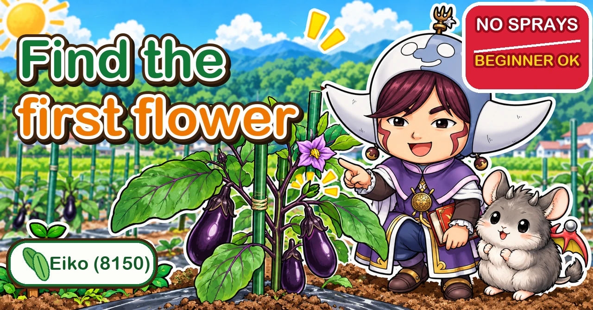

Aubergines: keep the two shoots under the first flower 🍆 From planting to an autumn crop

🍆 "The fruit never gets any bigger."
🍆 "It was going well, then it ran out of steam in August."
🍆 "Which side shoots am I supposed to keep?"
Hello, I'm Eiko. Eight years of growing vegetables organically and without pesticides, and a teaching licence in science.
Aubergines love food and water, and they pay you back for every bit of attention with a crop that runs from summer into autumn. This article goes through the whole season in order: choosing the plant, planting, training to three stems, feeding and watering, pests, and the summer cut-back that gives you autumn aubergines.
Growers disagree on quite a few points with aubergines, so where they do, I've put both views side by side.
① Choose a grafted plant, and look at the stem

What this diagram says （図解の文字）
- Look at the graft and the thickness of the stem
- "Buy this one" ◎ — "thick stem", "first flower", "the graft — don't bury it" → "thick stem, first flower already on"
- "Tall and spindly" ✕ — "thin stem", "looks impressive, nothing inside" → "choose by thickness, not height"
- "Messy graft" ✕ — "wobbly graft", "shoots from the rootstock" → "later the rootstock shoots steal the food"
- "Without sprays, a grafted plant is a must — once disease gets in, it's over"
Aubergines are strongly recommended as grafted plants — a good variety joined onto a disease-resistant rootstock. They stand up much better to soil-borne wilt diseases, cope better when the bed has grown nightshades before, and crop more heavily.
If you grow without sprays, some growers call grafting essential: once a soil-borne wilt gets in, there is almost nothing you can do. A grafted plant costs more, and it earns it.
- A thick, sturdy stem, ideally with the first flower already showing
- A clean graft. A rough, wobbly graft tends to throw shoots from the rootstock
- No holes or spots on the leaves
Planting late? Bigger plants, 8–12 in (20–30 cm) tall, appear in garden centres later in spring and help you catch up.
② Planting: never bury the graft
Plant once the nights have warmed up. If you go early, protect the plant with a collar — four canes with an empty compost bag around them — or a fleece tunnel against cold and wind.
- Soak the pot in a bucket of water for about ten minutes first
- Set the rootball so its surface sits about ½ in (1 cm) above the soil around it
- Keep the graft above the soil. Bury it and the top part (the variety) grows its own roots — and those roots have none of the rootstock's disease resistance
- Firm the soil round the rootball so there are no gaps. Air pockets are what stop a plant taking
- Put in a temporary cane on the same day

What this diagram says （図解の文字）
- One temporary cane, on the day you plant
- "Planting day: temporary cane" — "about 80 cm long", "45 degrees", "touching two thirds of the way up", "10–15 cm from the base — any closer and you cut roots" → "a plant rocking in the wind snaps its fine roots"
- "Big loop on the aubergine side" — "the stem will thicken; don't tie it tight"
- "Waist height: three proper canes" — "follow the main stem", "follow the two shoots below the first flower, in an inverted V", "1.5 m canes are plenty" → "too upright and it gets crowded and hard to work"
- "Common accident": "pull the cane out without untying and the plant comes with it" — "always untie first"
- "If that's a bother, put the proper canes in from the start"
Aubergine leaves are big. A plant rocking in the wind tears its fine roots and takes longer to establish, so the temporary cane matters more than it looks. Push a thin cane of about 30 in (80 cm) in at 45°, 4–6 in (10–15 cm) from the stem, and tie it loosely with a large loop on the plant side.
Give it two weeks
For the first two weeks after planting, don't feed at all. Growth looks slow and it's tempting, but feeding now gives soft, leafy plants, fewer flowers, and damaged roots. In open ground, keep watering light too — roots that have to go looking for water go deep, and deep roots get the plant through a dry summer. Containers dry out much faster, so judge those by the soil.
Give each plant a gentle wiggle after a week or so. If it wobbles, something may be eating the roots — chafer grubs are a common culprit.
③ Three main stems, chosen from the first flower

What this diagram says （図解の文字）
- Keep only the shoots below the first flower
- "First flower" — "keep" ◎ the two shoots just below it — "remove" ✕ everything lower down
- "One main stem + the two side shoots below the first flower = three-stem training"
- "Common mistake": "the finer the side shoot, the more you want to keep it"
- "How": "snap them off by hand while small" — "cut them big and the wound is big"
- "If in doubt, find the flower first"
The standard for a home garden is three main stems:
- The main stem — the one carrying the first flower
- The side shoot immediately below the first flower — usually the most vigorous of all
- The side shoot below that one
Rub out every shoot lower down. Left on, they draw food and the plant stalls.
One trap: if you pick off the first flower before choosing the stems, you lose your landmark. Decide on the three stems first, then remove the first flower or fruit if you're going to.
Snap shoots off by hand on a dry morning so the wound heals quickly — scissors can carry disease from plant to plant. If you must cut, wipe the blades with alcohol between plants. Wear gloves; aubergines have small spines on the stems, leaves and calyx.
When the plant reaches about waist height, replace the temporary cane with three canes set as a triangle, each following one of the three stems, so the plant opens out instead of crowding.
④ Feeding: little and often, under the leaf tips

What this diagram says （図解の文字）
- Water and fertiliser — not at the base of the stem
- "First feed goes here: 15–20 cm from the stem" ／ "20 cc on each side"
- "Scattered at the stem, it does nothing" ✕
- "Water goes in the path between beds — the roots grow out looking for it" ／ "water the path on the other side too"
- "Water early in the morning"
- "Without water, roots can't take up fertiliser"
Start feeding about a month after planting (some growers start when the first fruit sets, and bring it forward if the plant looks pale). How often is where growers really disagree — anything from weekly to monthly — but they agree on one thing: small amounts, many times. A big dose makes a soft plant.
Where matters more than people think. Put it under the tips of the biggest leaves — that's where the feeding roots have reached. Start about 6–8 in (15–20 cm) from the stem, and later move out to the middle between plants or the edge of the bed.
- Underfed: pale yellow-green leaves; small, pale flowers that drop
- About right: deep green leaves, a thick stem
- Overfed: very dark, purplish leaves whose edges curl outward and droop; lumpy fruit
And the most useful line in this article: if you've been feeding and the plant is still flagging, suspect water, not fertiliser. Roots can only take up nutrients dissolved in water.
Water
In open ground, many growers soak the paths beside the bed rather than the base of the plant, so the roots grow outward toward the water. Pour, pause to let it soak in, then pour again. Water early in the morning. In a container, the plant can need water morning and evening in midsummer — a straw mulch helps a lot.
⑤ Read the flowers and the fruit

What this diagram says （図解の文字）
- The flower is a health check — "pistil", "stamens"
- ◎ "Long pistil" — "healthy; enough food and water"
- ✕ "Short pistil" — "a sign of shortage; the flower tends to drop"
- "The flower shows the signs sooner than leaf colour or fruit size" ／ "a short-styled flower is your cue to feed and water"
- "A short pistil means a tired plant"
Look into an open flower. If the pistil in the middle stands out longer than the yellow stamens around it, the plant is well fed and watered. If it's hidden inside them, the plant is short of something — and that flower is likely to drop. It's an earlier warning than the leaves give you.

What this diagram says （図解の文字）
- The shape of the fruit tells you the cause
- "Odd shape" ("tastes the same"): "too much fertiliser (dark leaves, tips curling outward)", "waterlogged after long rain", "hot–cold swings while flowers form", "dry at pollination"
- "Won't size up": "two flowers on one node → remove the thinner one", "2–3 fruit in one place → cut the extras", "are rootstock shoots growing?", "is there enough water (dig and check)?"
- "Hard and dull": "extreme dryness up to early August"; "after a cut-back, fruit on the new shoots is soft again"
- "In every case, either water or fertiliser has gone too far" — "check for standing water between beds and very dark leaves"
- "An aubergine's fruit is a mirror of the plant"
A few things worth knowing: remove any shoots coming from below the graft — they soak up fertiliser and steal the crop. Hard, dull-skinned fruit usually means the plant went very dry. And as for the first fruit — some growers pick it off small so the plant builds up faster; others leave it if the plant is vigorous. Judge by the plant's strength.
⑥ A summer cut-back for autumn aubergines
Left alone, an aubergine often wears itself out in the heat and finishes by mid-August. Cut it back and you get a second crop from mid-September into October.
- When: late July to mid-August, after picking the fruit that's on it
- How: cut the stems back hard — often by about half — to just above a healthy side shoot
- At the same time: feed on both sides of the plant, 8–12 in (20–30 cm) out, and water well. Cutting back without feeding gives you lovely leaves and poor fruit
Expect about a month (sometimes two) without a harvest. If you'd rather keep picking, there's an alternative: let each side shoot carry one fruit, stop it one leaf beyond the flower, and cut the whole shoot back to its base when you pick — the new shoot at the base becomes the next fruiting shoot.
⑦ Four summer pests, in the order they arrive

What this diagram says （図解の文字）
- Remember them by the order they arrive
- "28-spot ladybird" — "early July is the battle; the one without a shine is the pest"
- "Aphids" — "back in September; knock them off with water"
- "Spider mites" — "they love dry weather; spray water on the undersides to prevent them"
- "Tobacco budworm" — "droppings are the clue; once inside, you can't get it out"
- "Easier to be there before they arrive than to hunt for them after"
- 28-spot ladybird (a leaf-eating ladybird, not the helpful kind): matt, fine-haired, no shine — that's how to tell it apart, not the number of spots. Leaves are left with pale, see-through ladder patterns. Squash the clusters of yellow eggs on the undersides; early July is the time to get ahead of it
- Aphids: quiet in high summer, back in force in September when it cools. A strong jet of water knocks them off
- Spider mites: love hot, dry weather. Spraying water under the leaves helps prevent them
- Caterpillars boring into fruit: a round hole and droppings. Once inside, you can't get them out — pick and remove the fruit
And one disease warning: bacterial wilt can be spread on scissor blades — another reason to snap shoots by hand.
⑧ Picking
Pick at a little over 4 in (10 cm). Something approaching 8 in (20 cm) is too big — the plant has spent a lot on it and the next fruit slows down. Aubergines don't twist off, so use scissors. Pick little and often; when it's going well you'll take three or four at a time.
Science bit: why the graft must stay above the soil 🔬
A grafted plant is two plants in one. The roots belong to the rootstock, chosen because it resists soil-borne disease. The top belongs to the variety, chosen because its fruit is good.
Bury the graft and the top part sends out roots of its own into the soil. Those roots have none of the rootstock's resistance — so you've paid for a grafted plant and given the disease a way in anyway.
And why does the shoot just below the first flower grow so strongly? Plants push food toward their highest growing points. That shoot sits close to the top of the young plant, so it gets the lion's share — which is exactly why it makes the best second stem.
To sum up
- ✅ Buy a grafted plant with a thick stem, and never bury the graft
- ✅ Plant when the nights are warm, and put in a temporary cane the same day
- ✅ No feeding for two weeks, and go light on water in open ground
- ✅ Three stems: the main stem and the two shoots below the first flower
- ✅ Feed little and often, under the leaf tips; if it still flags, suspect water
- ✅ A long pistil means a happy plant
- ✅ Cut back in late summer — and feed at the same time — for autumn aubergines
- ✅ Pick at a little over 4 in (10 cm), often
Aubergines give back whatever you put in. Hold your nerve for the first two weeks, set up the three stems, and don't let food or water run out — and you'll be picking from midsummer to the first cold nights 🍆
Thank you for reading!